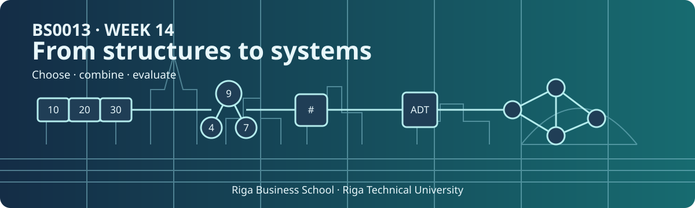

Week 14 · Interactive lesson · Version 1
STL, Iterators, Synthesis and Selection
From structures to systems: choose, combine and evaluate.

Essential path: sections 1–8, 11 and selected self-checks (50–65 minutes). 9–10 and 12 are optional.
1. From implementation to engineering
First understand representation, then select abstraction. The standard specifies observable contracts, not mandatory internal layouts. Graphs, tries and persistent B+ trees have no direct STL counterpart. Compare ordering, ownership, locality, mutation frequency and guarantees.
ADT → representation → invariant → trace → complexity → ownership → tests → workload.
2. Container explorer
Explore thirteen representations. Diagrams are conceptual, not mandated layouts.
3. Complexity guarantees
Assume constant-cost comparisons/hashes. Average is not amortized or worst-case. List insertion assumes a known position.
| Container | Access | Lookup | Insert | Erase |
|---|---|---|---|---|
| array | O(1) index | O(n) value | Fixed extent | Fixed extent |
| vector | O(1) index | O(n) value | Amortized O(1) append; worst O(n); middle O(n) | O(n) middle |
| deque | O(1) index | O(n) value | O(1) ends; O(n) middle | O(1) ends; O(n) middle |
| list | O(n) traversal | O(n) value | O(1) known position | O(1) known position |
| forward_list | O(n) traversal | O(n) value | O(1) after known predecessor | O(1) after known predecessor |
| set | No index | O(log n) key | O(log n) | O(log n) by key |
| map | No index | O(log n) key | O(log n) | O(log n) by key |
| unordered_set | No index | Average O(1), worst O(n) | Average O(1), worst O(n) | Average O(1), worst O(n) by key |
| unordered_map | No index | Average O(1), worst O(n) | Average O(1), worst O(n) | Average O(1), worst O(n) by key |
| stack | Top only | Not exposed | Underlying push_back | Underlying pop_back |
| queue | Front/back | Not exposed | Underlying push_back | Underlying pop_front |
| priority_queue | O(1) top | Not exposed | O(log n) heap comparisons + underlying insertion | O(log n) heap comparisons + underlying removal |
| sorted vector | O(1) index | O(log n) binary search | O(n) incremental | O(n) middle |
4. Iterator compatibility
Contiguous → random access → bidirectional → forward → input (readable hierarchy); output is a separate capability. Ranges are half-open [first,last). Iterator category is not the only requirement: writability, comparator and partitioning matter too.
5. Iterator invalidation laboratory
Predict which old handles survive. Invalid handles are symbolic only: never dereference or compare invalidated iterators. For erase while traversing, use it = v.erase(it) or increment when no erase occurs. Use std::erase_if for many removals.
6. Ownership and value semantics
RAII ties resource lifetime to owners. Copying pointers does not clone pointees. A moved-from container is valid but may be unspecified.
7. Workload laboratory
Estimate costs for four models at fixed representative n. Hits and insertion positions assumed uniform; inserts are unique; favorable hashing. Equal unit costs are illustrative, not actual timings.
Deterministic lookup counts
20 queries, half hits; midpoint search models a balanced tree, separate chaining models a hash table. Counts are key comparisons, not STL measurements. Sample size capped at 1000.
8. Data structure selection
Judge the workload, not a universal fastest container. A strong candidate need not be uniquely correct.
9. Combining structures (optional)
Identifier lookup and priority extraction need consistent access paths. This educational model rebuilds a heap after mutations, not arbitrary efficient std::priority_queue updates. An indexed heap or lazy versioned entries are alternative production designs.
LRU cache alternative: map keys to list nodes; index membership and recency order must agree.
10. Benchmark analysis (optional)
These timings are synthetic, not measurements. The real C++ comparison belongs in the Riga Information Index lab. Verify correctness first, generate data outside timers, use Release builds, repeat trials and report environment.
| n | Linear µs | Sorted µs | Tree µs | Hash µs |
|---|---|---|---|---|
| 100 | 8 | 5 | 7 | 4 |
| 1000 | 61 | 9 | 13 | 7 |
| 10000 | 590 | 15 | 28 | 15 |
11. Cumulative revision
Review each structure's contract, invariant and cost. The checklist is local to this browser and transmits no data.
12. C++20 reference
Independent C++20 examples, not assessed lab solutions. Compile with g++ -std=c++20 -Wall -Wextra -pedantic FILE.cpp -o demo.
Container interfaces
Download 01_container_overview.cpp
#include <array>
#include <deque>
#include <list>
#include <queue>
#include <vector>
#include <cassert>
int main(){std::array<int,3> a{1,2,3};std::vector<int> v(a.begin(),a.end());std::deque<int> d(v.begin(),v.end());d.push_front(0);std::list<int> l{1,2};l.push_back(3);std::queue<int> q;q.push(d.front());q.push(l.back());assert(q.front()==0 && q.back()==3);}Capacity and reallocation
Download 02_vector_capacity.cpp
#include <vector>
#include <cassert>
int main(){std::vector<int> v{10,20,30,40};v.reserve(v.size()+2);auto cap=v.capacity();int& ref=v[1];v.push_back(50);assert(v.capacity()==cap && ref==20);while(v.size()<v.capacity())v.push_back(0);auto old=v.capacity();v.push_back(60);assert(v.capacity()>old);/* Never use ref after reallocation. */}Safe erasure
Download 03_safe_iterator_erase.cpp
#include <vector>
#include <cassert>
int main(){std::vector<int> v{1,-2,-3,4};for(auto it=v.begin();it!=v.end();){if(*it<0)it=v.erase(it);else ++it;}assert((v==std::vector<int>{1,4}));std::erase_if(v,[](int x){return x%2==0;});assert(v.size()==1);}Iterator concepts
Download 04_iterator_categories.cpp
#include <iterator>
#include <vector>
#include <deque>
#include <list>
#include <forward_list>
#include <unordered_set>
static_assert(std::contiguous_iterator<std::vector<int>::iterator>);
static_assert(std::random_access_iterator<std::deque<int>::iterator>);
static_assert(!std::contiguous_iterator<std::deque<int>::iterator>);
static_assert(std::bidirectional_iterator<std::list<int>::iterator>);
static_assert(std::forward_iterator<std::forward_list<int>::iterator>);
static_assert(std::forward_iterator<std::unordered_set<int>::iterator>);
int main(){}Algorithm requirements
Download 05_algorithm_compatibility.cpp
#include <algorithm>
#include <list>
#include <vector>
#include <cassert>
int main(){std::vector<int> v{4,2,1};std::sort(v.begin(),v.end());std::list<int> l{4,2,1};l.sort();auto it=std::lower_bound(v.begin(),v.end(),2);assert(it!=v.end() && *it==2);assert(std::is_sorted(l.begin(),l.end()));}Ownership
Download 06_copy_move_ownership.cpp
#include <vector>
#include <memory>
#include <utility>
#include <cassert>
int main(){std::vector<int> a{10,20};auto b=a;b[0]=99;assert(a[0]==10);auto& alias=a;alias[0]=30;auto c=std::move(a);assert(c[0]==30);a.clear();auto p=std::make_unique<int>(7);auto q=std::move(p);assert(!p && *q==7);}Lookup semantics
#include <map>
#include <string>
#include <cassert>
int main(){std::map<int,std::string> m{{1,"Riga"}};assert(!m.contains(2));assert(m.find(2)==m.end() && m.size()==1);auto& s=m[2];assert(s.empty() && m.size()==2);s="Liepaja";assert(m.at(2)=="Liepaja");}Rehash and references
#include <unordered_map>
#include <cassert>
int main(){std::unordered_map<int,int> m{{1,10},{2,20}};const int& ref=m.at(1);auto before=m.bucket_count();m.rehash(before+1);assert(m.bucket_count()>=before+1);assert(ref==10);}Half-open ordered range
Download 09_ordered_ranges.cpp
#include <map>
#include <vector>
#include <cassert>
int main(){std::map<int,int> m{{1,10},{3,30},{5,50},{7,70}};std::vector<int> keys;for(auto it=m.lower_bound(3),end=m.lower_bound(7);it!=end;++it)keys.push_back(it->first);assert((keys==std::vector<int>{3,5}));}Two access paths
Download 10_composite_structures.cpp
#include <map>
#include <set>
#include <string>
#include <utility>
#include <cassert>
int main(){std::map<std::string,int> by_id;std::set<std::pair<int,std::string>> by_priority;auto insert=[&](std::string id,int p){if(by_id.emplace(id,p).second)by_priority.emplace(p,id);};insert("A",3);insert("B",7);auto top=*by_priority.rbegin();assert(top.second=="B" && by_id.at(top.second)==top.first);by_id.erase(top.second);by_priority.erase(top);assert(by_id.size()==by_priority.size());/* Production needs exception-safety policy. */}13. Formative self-check
40 original public formative questions with randomized order and explanatory feedback. Not graded, no answers transmitted.